Welcome to Jude's Travel Blog!
Welcome to my travel corner! Here, I share my travel experiences, memorable destinations, and the beautiful places I have had the opportunity to explore. Each trip brings new experiences, stories, and memories worth sharing. Join me as I take you through my adventures, starting with my journey to Taiwan. I hope you enjoy exploring these places through my photos and stories!
TAIWAN
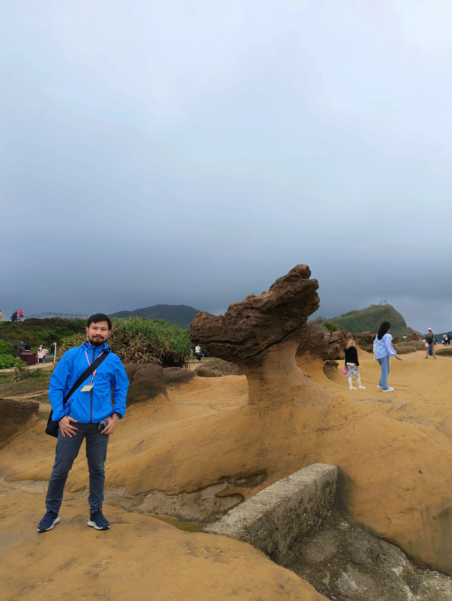
Visiting Taiwan was a wonderful experience. I enjoyed the delicious food, which was surprisingly affordable, and appreciated how clean and organized everything was. The country had a nice balance of modern cities, historical places, beautiful natural landscapes, and exciting attractions. There was always something interesting to explore, making the trip even more enjoyable.
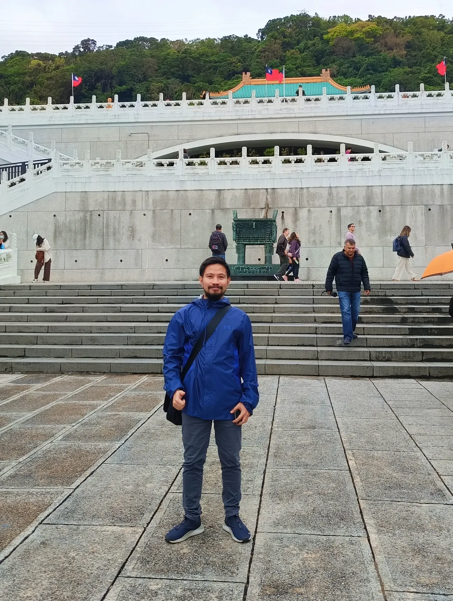
History and Culture
One of the places I visited was the National Palace Museum in Shilin District, Taipei. It is known for its extensive collection of Chinese historical artifacts and artworks. Visiting a place like this offers a glimpse into the history, traditions, and cultural heritage of the region.
Taiwan also has many traditional streets and neighborhoods where visitors can experience its local culture. These places offer a different atmosphere from the modern parts of the cities.
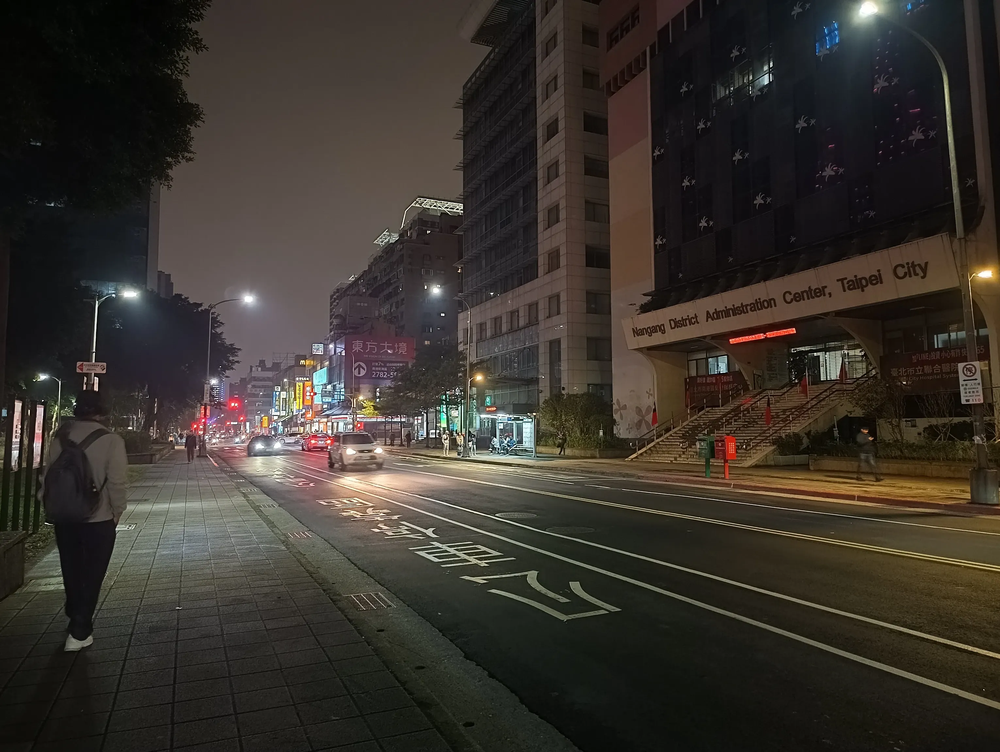
Exploring Taipei
Taipei was one of the places I enjoyed exploring. The city has busy streets, modern buildings, shops, and plenty of places to visit. I also appreciated how convenient it was to get around using public transportation. The trains and other transportation options made traveling between destinations much easier.
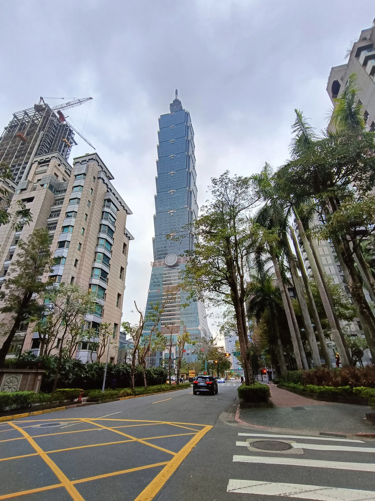
The Iconic Taipei 101
Taipei 101 is one of Taiwan's most recognizable landmarks. Located in Xinyi District, this impressive skyscraper stands out among the surrounding buildings. It is especially popular for its observation deck, which provides a panoramic view of Taipei. Seeing such a remarkable structure was one of the highlights of my trip.
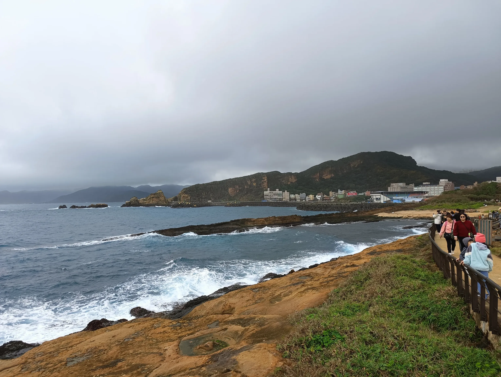
Beautiful Natural Landscapes
Taiwan is not just about cities and buildings. It also has beautiful natural attractions. One place I visited was Yehliu Geopark in New Taipei City. It is famous for its unusual rock formations shaped over time by wind, sea erosion, and other natural processes. The scenery was very different from the urban areas, making it an interesting place to explore.
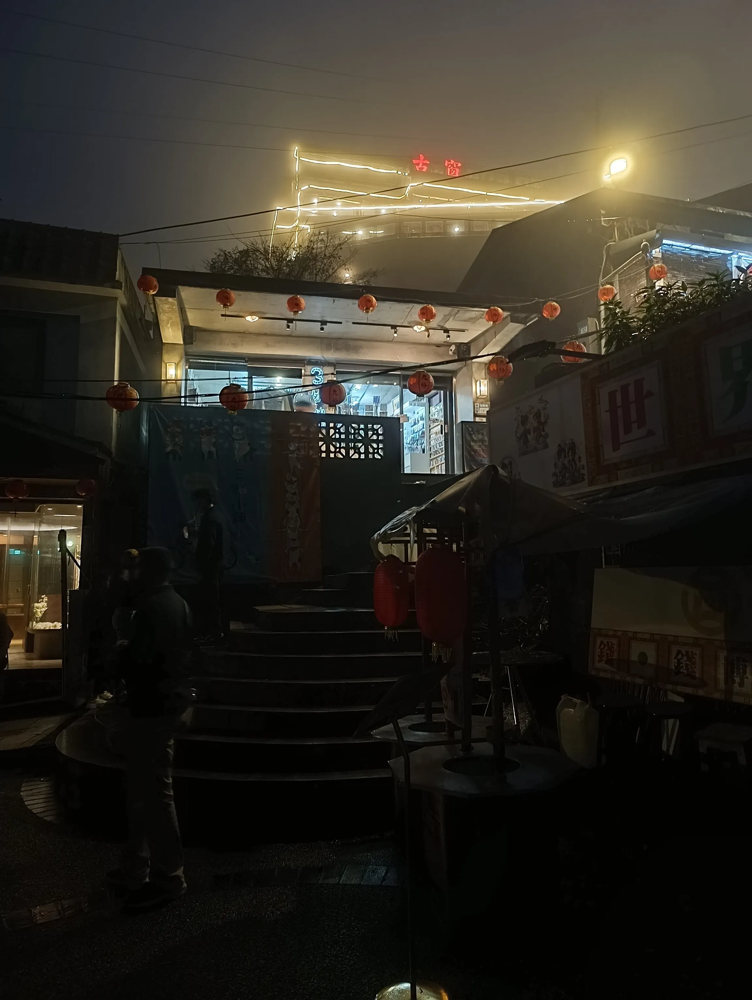
Exploring Taiwan's Old Streets
Jiufen Old Street was another interesting destination. This mountain town is known for its narrow streets, traditional buildings, small shops, and teahouses. It also has a beautiful atmosphere, especially with its hillside location and views of the surrounding mountains and sea. Walking through the area gives visitors a glimpse of Taiwan's past.
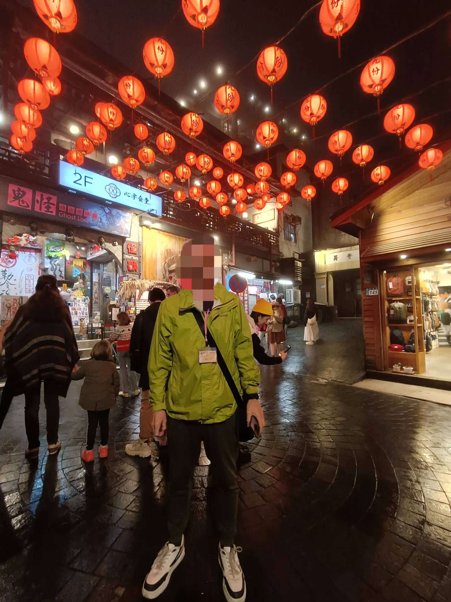
I also got to see more of Jiufen's unique streets and surroundings. Its traditional architecture and winding pathways make it different from the busy streets of Taipei.
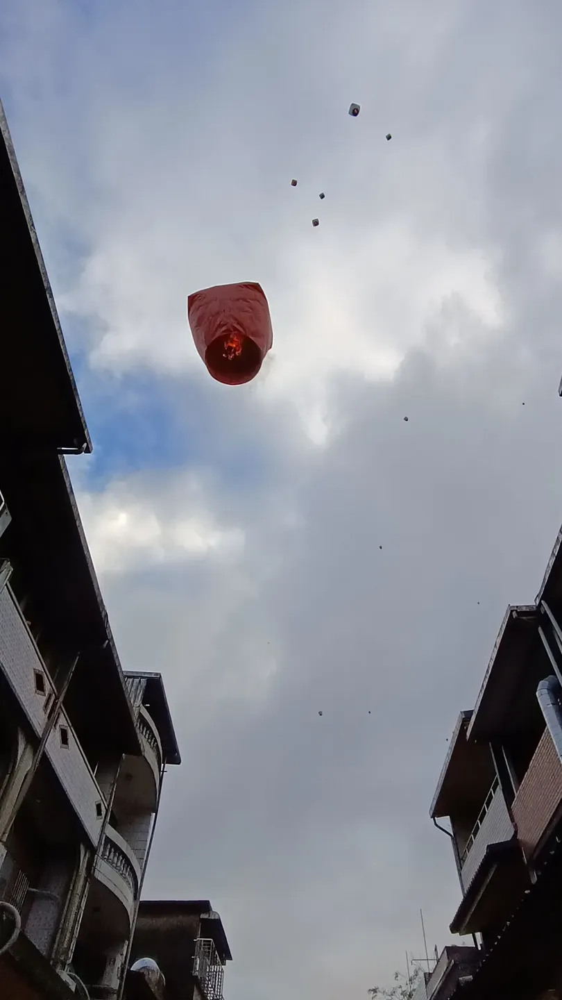
A Visit to Shifen Old Street
Shifen Old Street is another well-known destination in New Taipei City. What makes it unique is the railway that runs directly through the old street, with shops and food stalls located along the tracks. It is also famous for its sky lanterns, where visitors can write their wishes before releasing them into the sky.
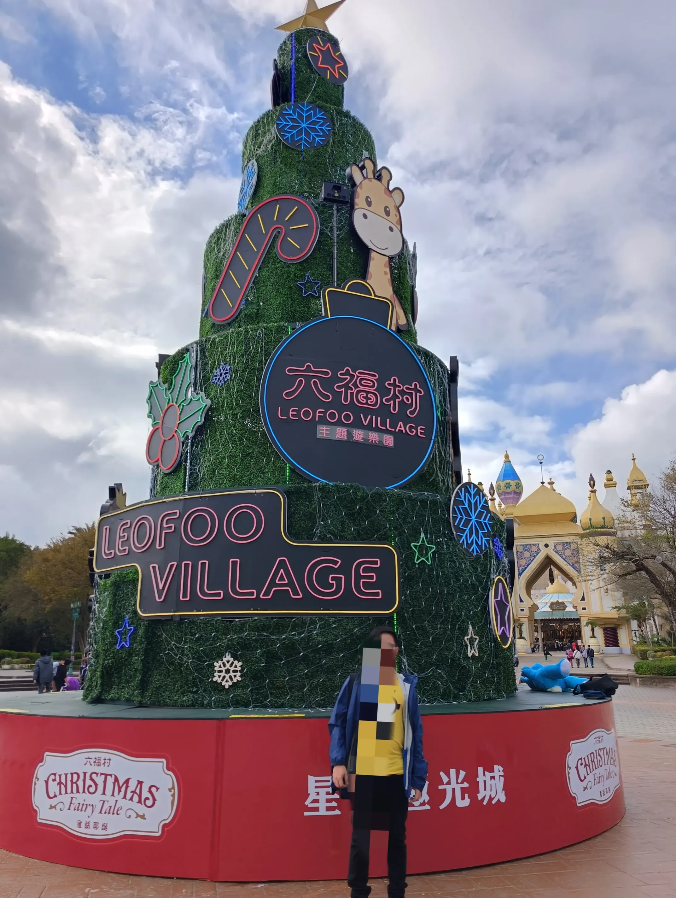
Fun and Adventure at Leofoo Village
For something more exciting, I also visited Leofoo Village Theme Park in Hsinchu County. The park features different themed areas, amusement rides, and wildlife attractions. It offers a variety of activities for visitors, making it a fun destination for families and people who enjoy adventure and entertainment.
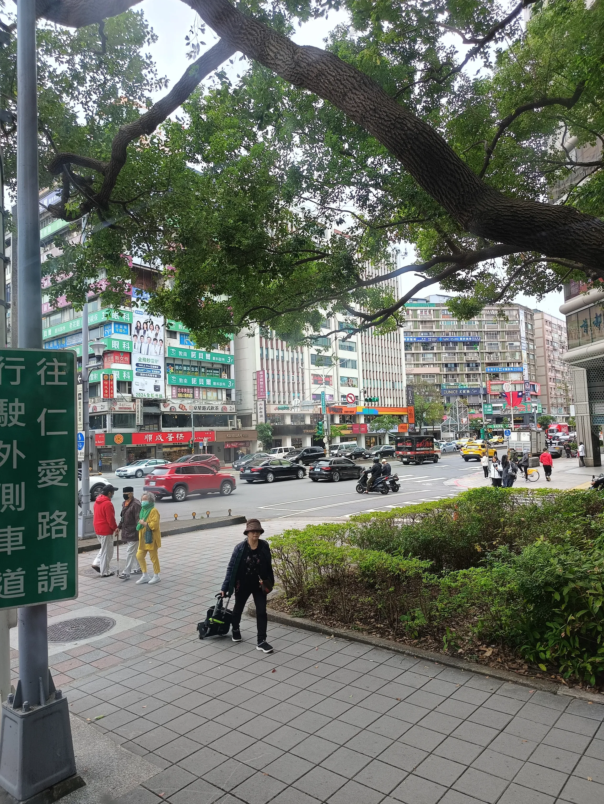
Everyday Life in Taiwan
Aside from the popular tourist attractions, I also enjoyed seeing the everyday streets and surroundings. Some areas were busy and filled with people, while others had a quieter atmosphere. These ordinary places gave me a better glimpse of what daily life in Taiwan looks like.
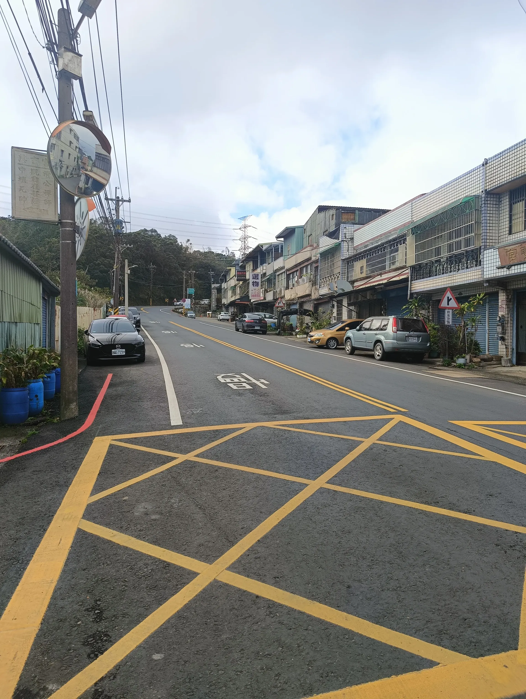
What I Appreciated About Taiwan
One thing I appreciated most about Taiwan was how convenient and comfortable it was to travel around. Public transportation was fast and accessible, the surroundings were generally clean, and the people I encountered were kind and helpful. Even when there was a language barrier, they were patient and tried their best to understand me.
I also loved the food. There were plenty of delicious choices, and many of them were surprisingly affordable. It was nice being able to enjoy different local dishes without spending too much.
Final Thoughts
Overall, Taiwan was a memorable destination. I enjoyed its combination of modern cities, historical attractions, natural scenery, theme parks, and traditional streets. The convenient transportation, affordable food, cleanliness, and kindness of the people made the experience even better. It is definitely a place I would love to visit again someday.
My Taiwan Photo Gallery
Singapore
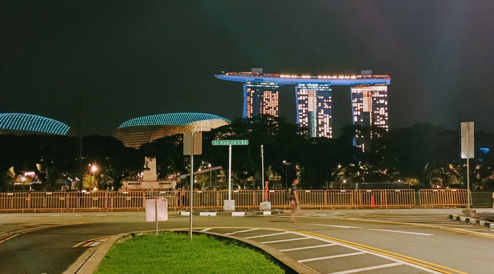
Singapore is one of the most developed countries I have visited. I was impressed by its modern cities, beautiful surroundings, and well-organized public facilities. From its stunning skyline to its many tourist attractions, there was always something interesting to see and experience.
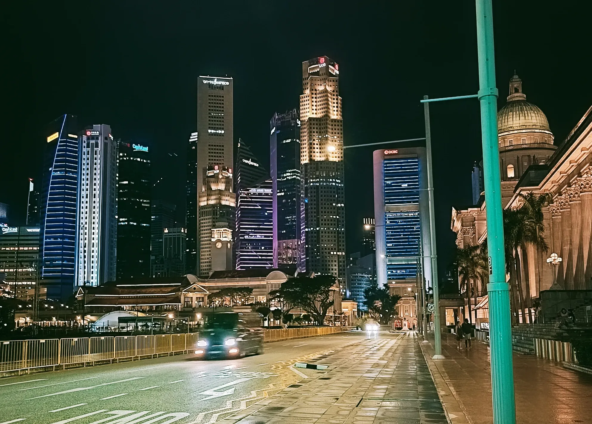
A Modern and Beautiful City
One of the things I loved most about Singapore was how beautiful its cities looked, especially at night. The bright lights, tall skyscrapers, and impressive buildings created stunning views. Marina Bay was one of the places that caught my attention, with its beautiful waterfront scenery and iconic buildings. Almost everything looked modern, luxurious, and expensive.
I was also impressed by how clean the country was. It was surprisingly difficult to find litter in public areas. The streets, sidewalks, and public spaces were well-maintained, making the surroundings pleasant to explore.
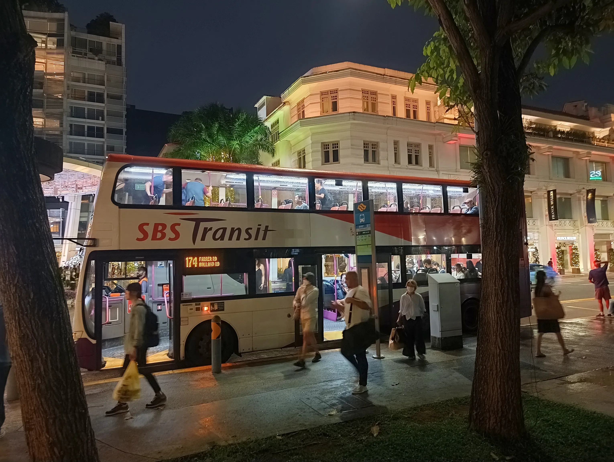
Getting Around Singapore
Transportation in Singapore was another thing I really appreciated. Its MRT trains and buses were reliable, convenient, and generally punctual. Traveling between destinations was fast and easy, especially because the country is relatively small. It was possible to visit several attractions in one day without spending too much time commuting.
Communication was also not a problem because English is widely spoken. This made it easier to ask for directions, order food, and interact with people.
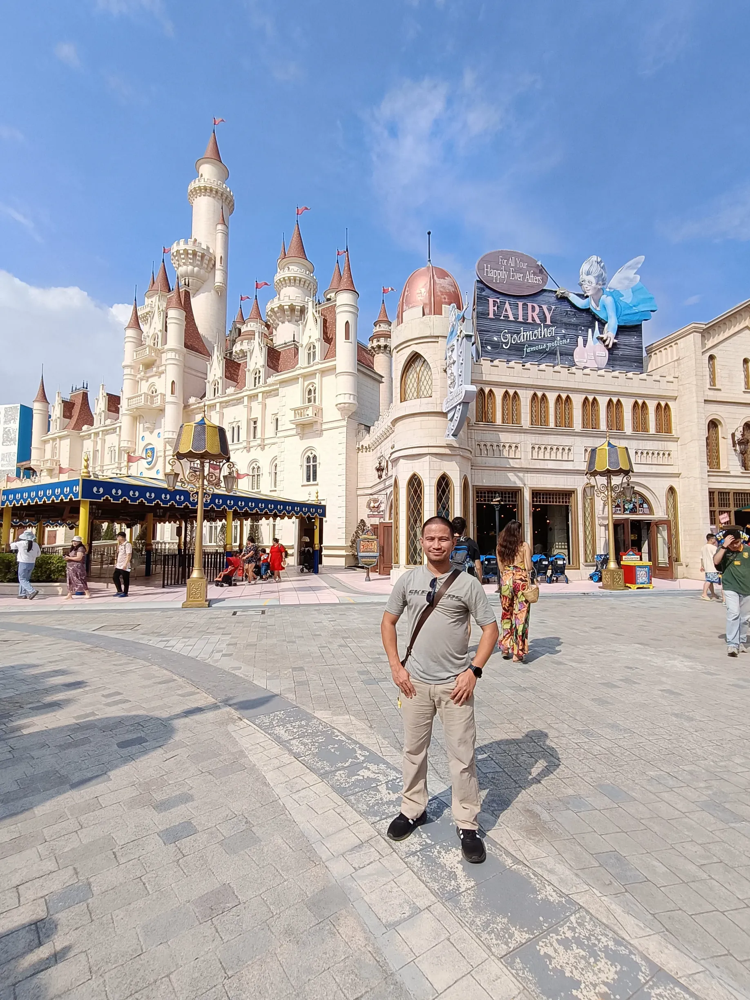
Things to See and Experience
Singapore has plenty of attractions and activities for different kinds of travelers. There are theme parks like Universal Studios Singapore, cable car rides offering beautiful views, wildlife experiences like the Singapore Zoo and Night Safari, and exciting skyscraper attractions with amazing city views.
For nature lovers, Gardens by the Bay is a must-see, with its enormous Supertrees and beautiful indoor gardens. There are also parks, walking trails, museums, shopping centers, and many other places worth exploring.
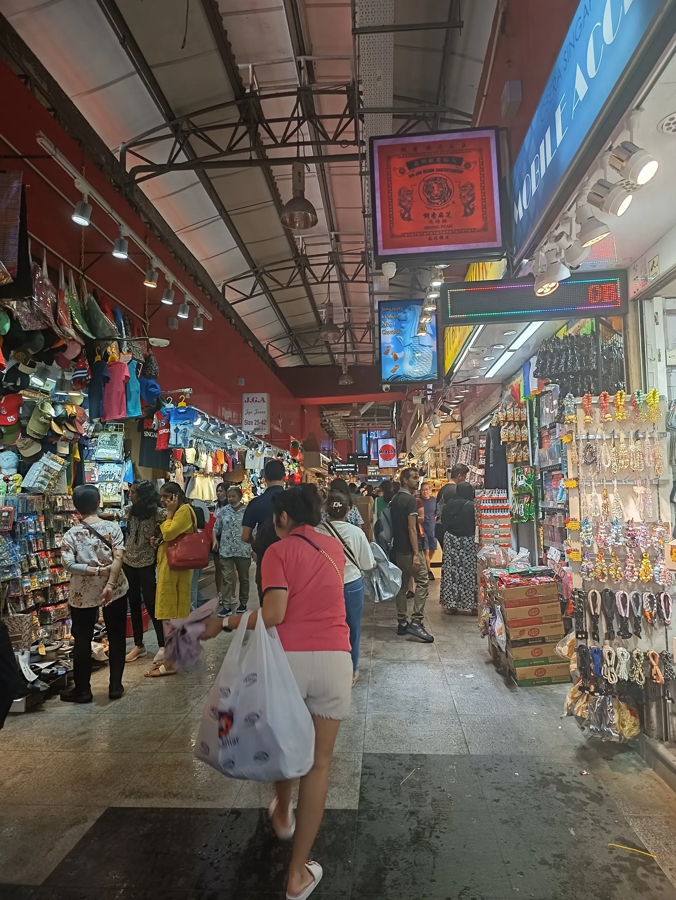
Food and Culture
Another interesting thing about Singapore is its diverse culture. Different communities have contributed to the country's traditions, architecture, and food. Places like Chinatown, Little India, and Kampong Glam each have their own unique atmosphere.
There are also plenty of food choices, from local favorites like Hainanese chicken rice and laksa to international cuisines. Hawker centres are particularly interesting because they offer a variety of local dishes in one place.
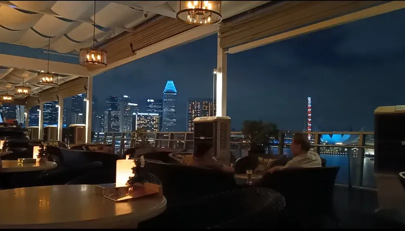
What I Didn't Like
Despite all the things I enjoyed, one major downside was how expensive Singapore could be. Almost everything seemed pricey, especially shopping, tourist attractions, and dining at restaurants. Even when traveling on a budget, expenses could add up quickly. Although there are affordable food options and free attractions, I still found Singapore to be a very expensive destination.
Final Thoughts
Overall, Singapore was an amazing place to visit. I loved its modern architecture, beautiful night views, cleanliness, efficient transportation, and wide variety of attractions. Although the high prices were a downside, they did not take away from the experience. It was definitely a memorable destination, and I would love to visit again someday.
My Singapore Photo Gallery
MALAYSIA
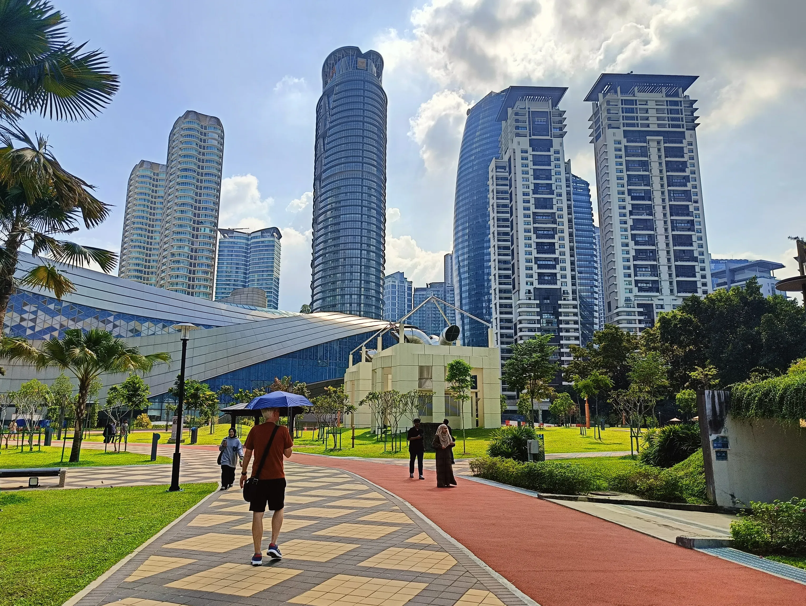
My trip to Malaysia was an exciting experience filled with beautiful destinations, impressive architecture, and a rich mix of cultures. I had the opportunity to visit several well-known attractions, from towering landmarks and historical sites to temples, aquariums, and lively cultural neighborhoods. What I particularly enjoyed about Malaysia was how it combines modern city life with traditional culture. The country has impressive skyscrapers, developed infrastructure, and convenient public transportation. At the same time, its different cultural influences can be seen in its architecture, food, and everyday life. Compared with Singapore and Taiwan, I found Malaysia a little less developed in some aspects, but it offered a more affordable travel experience. It was also interesting to see how much more developed its infrastructure and urban areas appeared compared with what I was used to in the Philippines.
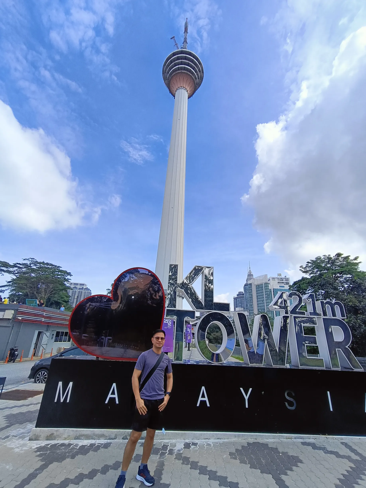
Exploring Kuala Lumpur from Above
One of the places I visited was KL Tower, also known as Menara Kuala Lumpur. It is a major telecommunications tower and one of the city's most recognizable structures. Standing on top of Bukit Nanas, it offers impressive views of Kuala Lumpur and its surrounding skyscrapers. Seeing the city from this landmark gave me a better appreciation of how large and developed Kuala Lumpur is. The combination of tall buildings, busy streets, and green surroundings made the view even more interesting.
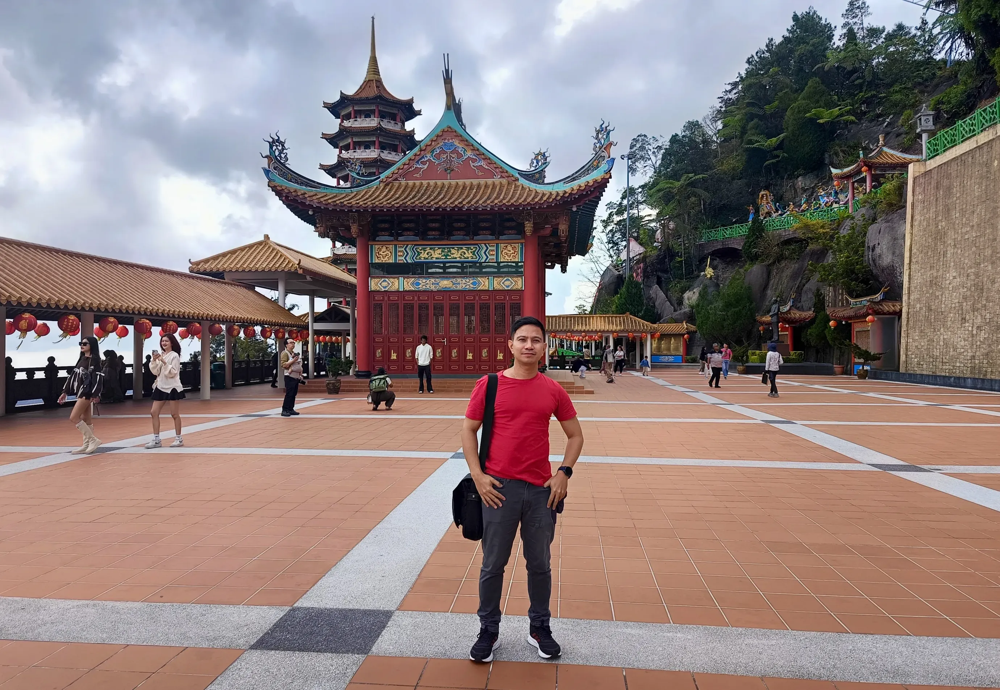
A Visit to Chin Swee Caves Temple
Another memorable destination was Chin Swee Caves Temple in Genting Highlands, Pahang. Located high in the mountains, the temple is surrounded by rocky landscapes, green hills, and beautiful natural scenery. Its elevated location provides a refreshing atmosphere and impressive views of the surrounding mountains. The temple features traditional Chinese architecture, pagodas, statues, and other religious structures. I found the place interesting because of its peaceful surroundings and the way its structures blend with the natural landscape. It was a nice opportunity to experience another side of Malaysia beyond its modern cities.
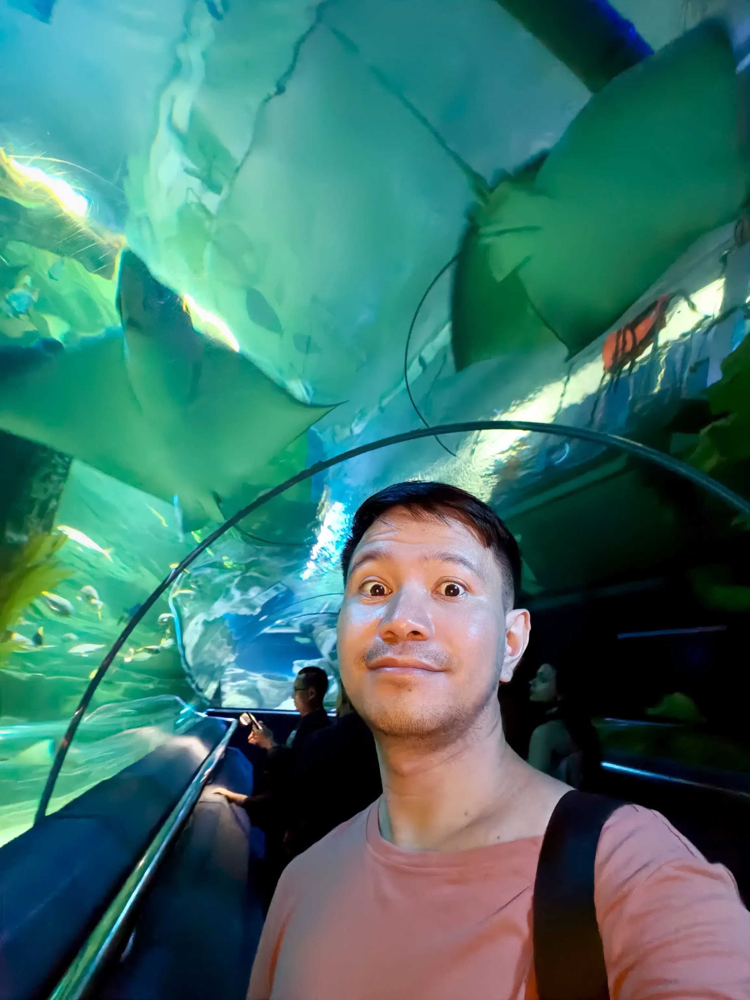
Discovering Marine Life at Aquaria KLCC
I also visited Aquaria KLCC, a popular oceanarium located near the Petronas Twin Towers. It features different marine animals and exhibits that allow visitors to learn more about underwater life. One of its main attractions is the 90-meter underwater tunnel, where visitors can walk through an enclosed passage surrounded by a large aquarium. It provides an opportunity to see sharks, rays, and different species of fish up close. It was an interesting experience and a nice change from visiting the usual landmarks and city attractions.
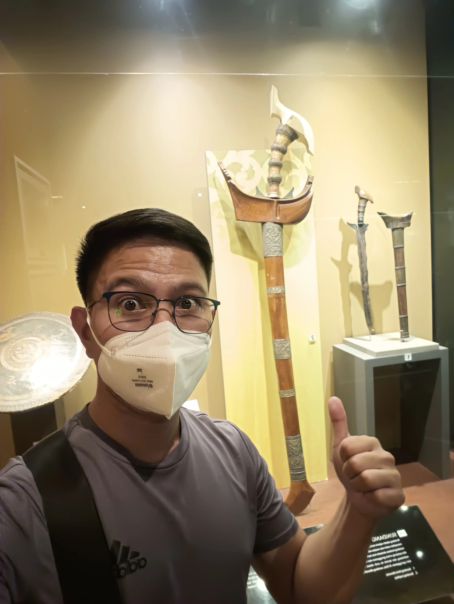
Learning About Malaysian History
The National Museum, also known as Muzium Negara, was another destination I visited. The museum showcases Malaysia's history, culture, and heritage through different collections and exhibitions. It provides visitors with an overview of the country's development, from its early civilizations and traditional kingdoms to the colonial period and modern Malaysia. Visiting this place was a good way to learn more about the country and understand the different influences that helped shape its identity.
Exploring the Temple Cave at Batu Caves
Batu Caves was one of the most fascinating places I visited in Malaysia. Located in Gombak, Selangor, it is a famous Hindu religious site built around a massive limestone hill. The main attraction is Temple Cave, which can be reached by climbing 272 colorful steps. Inside, visitors can find Hindu shrines and temples surrounded by enormous limestone formations. The combination of natural caves and religious architecture makes the place truly unique. I found it impressive how a natural landscape could also serve as an important place of worship and cultural significance.
The Iconic Petronas Twin Towers
No trip to Kuala Lumpur would feel complete without seeing the iconic Petronas Twin Towers. Standing approximately 452 meters tall, these twin skyscrapers are among the most recognizable landmarks in the world and a symbol of Malaysia's modern development. I was particularly impressed by their architectural design and the way they stand out among the surrounding buildings. Their glass and steel exterior gives them a very modern appearance, while their design also incorporates elements inspired by Islamic architecture. Seeing the towers in person was one of the highlights of my Malaysia trip. They represent the country's progress and its growing presence as a modern Southeast Asian destination.
Experiencing the Culture of Little India
Another interesting part of my trip was visiting Little India in Kuala Lumpur, particularly the Brickfields area. Unlike the modern business districts, this neighborhood has a more traditional and colorful atmosphere influenced by Indian culture. The streets are filled with Indian restaurants, shops, colorful decorations, traditional clothing, and businesses selling different products. Indian music and the smell of spices also add to the atmosphere of the area. What made this place interesting was seeing how different cultures exist alongside one another in Malaysia. It gave me a better appreciation of the country's multicultural identity.
Exploring Malaysia Through Its Food
One of the things I enjoyed most about Malaysia was its food. I noticed that many dishes had familiar flavors similar to what we have in the Philippines, especially when it came to rice-based meals, meat dishes, and flavorful sauces. However, Malaysian food offered a much wider variety because of the country's diverse cultural influences. Malay, Chinese, and Indian cuisines are all part of its everyday food culture. This creates a wide selection of dishes, ingredients, and flavors that visitors can experience. I also noticed that food servings were generally generous, and meals were noticeably more affordable compared with what I usually paid for similar meals in the Philippines. It was nice being able to enjoy satisfying meals without spending too much.
From Malay dishes to Chinese and Indian food, there was always something different to try. This variety made eating in Malaysia an enjoyable part of the trip. It also showed how a country's cultural diversity can influence something as simple as its everyday meals.
Impressive Skyscrapers and Modern Architecture
Another thing that caught my attention was Malaysia's impressive skyline. Kuala Lumpur has numerous skyscrapers, modern office buildings, shopping centers, and large developments that give the city a very modern appearance. I was particularly impressed by how these structures are spread throughout the city. Compared with the urban areas I am familiar with in the Philippines, Kuala Lumpur looked more developed and had a more modern cityscape. Although Malaysia may not have the same level of development as Singapore and Taiwan in some areas, I still found its architecture and urban development impressive. It was interesting to see how much the city has grown while maintaining its cultural landmarks and traditional neighborhoods.
Getting Around with Public Transportation
I also appreciated Malaysia's public transportation system, particularly in Kuala Lumpur. The city has different transportation options, including the MRT, LRT, monorail, and buses, making it easier to travel between different areas and attractions. Compared with my experience using public transportation in the Philippines, I found the system in Kuala Lumpur more organized and convenient. Having different train lines and transportation connections made getting around the city much easier. It also made me realize how important an efficient transportation system is in a growing city. It helps people travel more conveniently and supports the development of the surrounding areas.
Final Thoughts
Overall, my trip to Malaysia was a memorable experience. I enjoyed visiting its famous landmarks, exploring historical and religious sites, discovering different cultures, and trying its diverse food. What stood out to me most was the country's balance between modern development and cultural diversity. Its impressive skyscrapers and transportation infrastructure showed its progress, while places like Batu Caves, Chin Swee Caves Temple, and Little India reflected its rich traditions and heritage. Malaysia may not be as developed as Singapore and Taiwan in every aspect, but I found it to be a more affordable destination with impressive infrastructure and plenty of interesting places to explore. It was a trip that gave me a better appreciation of Southeast Asia and the different experiences each country has to offer.